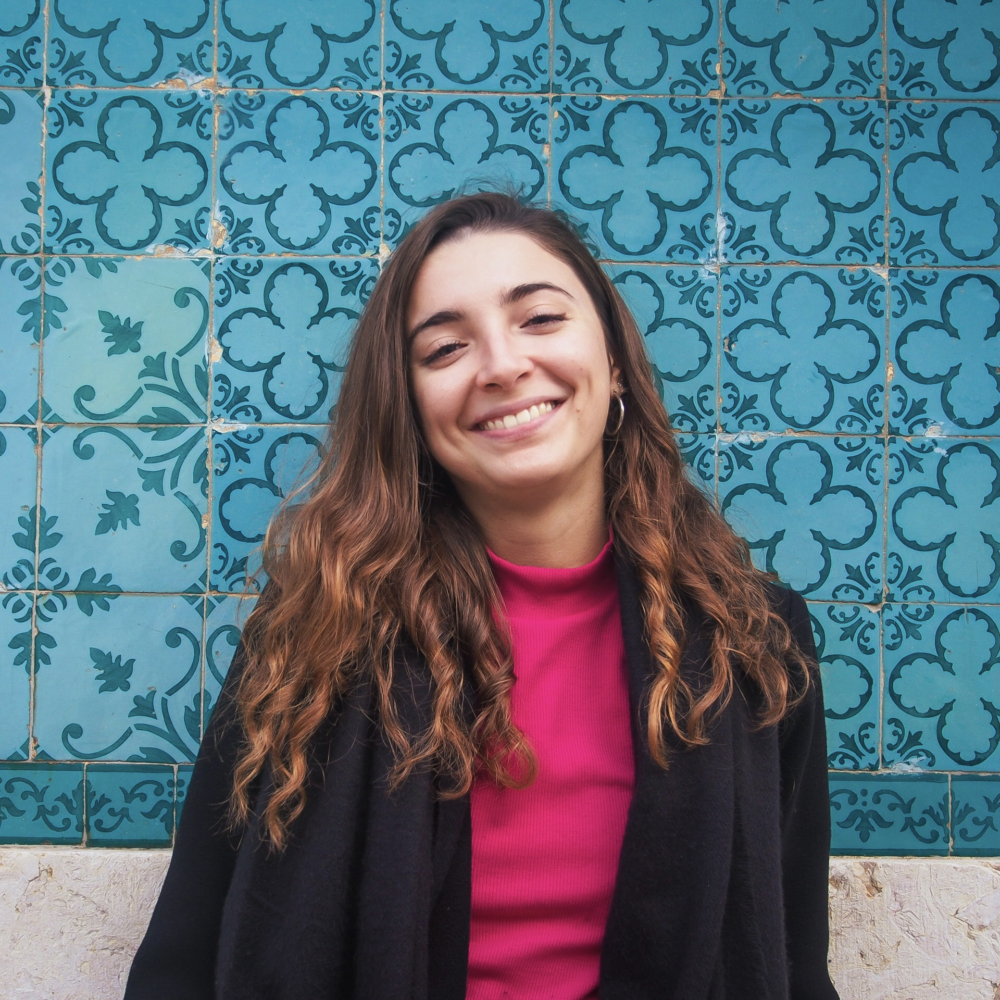

Ciao! Piacere di conoscerti!
Mi chiamo Sara e sono una UX Designer
Chi sono
Sono Sara e sono una UX Designer, laureata in Comunicazione, media e pubblicità. La mia passione per
le arti visive mi ha portata ad avvicinarmi al settore della UX Design, che ho poi ho deciso di
studiare attraverso il master UX/UI Design di Start2impact University, con cui ho potuto mettermi
alla prova con diversi progetti di design.
Ad oggi il mio obiettivo è lavorare nel mondo del
Design, creando esperienze digitali proiettate a soddisfare le esigenze di tutti.
Se desideri contattarmi, recati nella pagina contatti. Guarda il mio CV.

I miei progetti
Ecco una lista di alcuni miei progetti/lavori a cui ho contribuito.